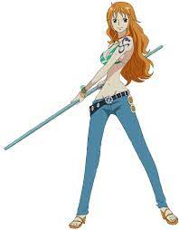

nami
conhecendo o personagem
Nami é a navegadora do navio e apenas luta usando armas, igual a Usopp, por não ter uma especialidade em combate ou poderes de Akuma no Mi. Ela navegou com Luffy antes de Usopp e Sanji, mas só começou a viajar com eles oficialmente como uma companheira depois de Arlong Park. Sua primeira recompensa foi de 16,000,000 de berries e ela ficou conhecida como a “Gata Ladra”. Quando Nami sentiu necessidade de ajudar nas lutas, ela pediu uma arma a Usopp e ele fez o Bastão Climático, uma arma que dispara ataques e faz truques com efeitos climáticos. Depois que a alma de Zeus se fundiu com o Bastão Climático, a arma de Nami ganhou vida e ficou muito mais forte. Agora a recompensa de Nami é de 366,000,000 de berries.